Lab: Domain Driven Design and Hexagonal Architecture
-
Open the project event-driven-architecture, and let’s analyze the Domain Driven Design for
order,customer, andinventory. -
View the organization of each of the modules, this is designed with Hexagonal Architecture or officially Ports and Adapters architecture.
-
Let’s discuss how each one is laid out, particularly domain events, so we can have a better understanding of how this architecture works so well.
Lab: Preliminary
Setting up our services
-
In your Codespaces environment, locate the docker-compose.yaml file at the root of your project. Right-click on the file, and select
Compose Up.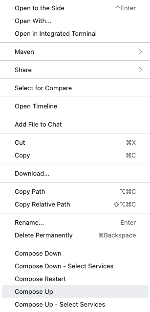
-
This will start a slew of services, but luckily, it is in the cloud, and we don’t have to worry about latent downloads.
-
While we download everything, let’s discuss what services we are using.
Switch from Lightweight Mode to Standard Mode
-
On the bottom of your online VS Code, you will see the following image . Click on it, so that way we can go into Standard Mode which offers compilation, testing and other services
Lab: Register Schemas
Uploading Schemas
-
After we are done downloading, let us upload the schemas that we will be using.
-
Open a terminal in your codespaces
-
Upload the customer schemas by doing the following:
-
cd customer -
mvn io.confluent:kafka-schema-registry-maven-plugin:register -
Wait until you see something like
Registered subject(customers-value) with id 1 version 1. Don’t worry if the numbers are not exact. -
Go to
Portsin your development environment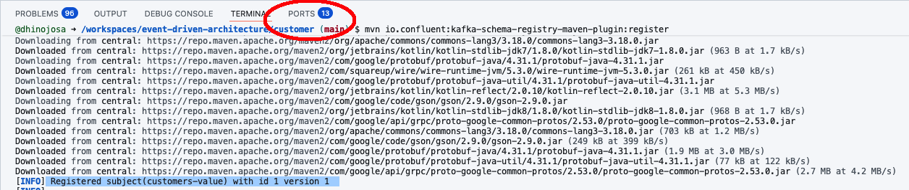
-
Locate the port with
8081as the port number, and click on the globe, which will open schema-registry in your browser. This will open schema-registry.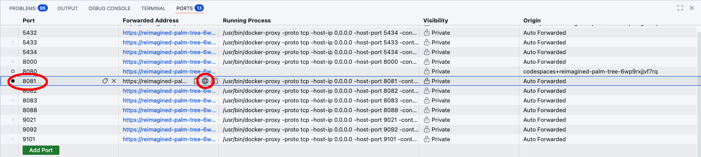
-
add
/subjectsto the URL that you get after clicking on schema-registry, so for example mine washttps://reimagined-palm-tree-6wp9rxjjvf7rq-8081.app.github.dev/, therefore I will go tohttps://reimagined-palm-tree-6wp9rxjjvf7rq-8081.app.github.dev/subjects/ -
You should see
[customers-value] -
Add more to the URL
<schema-registry-url>/subjects/customers-value/versions. This will show the version numbers for this particular subject. -
Finally, add the version and you will see the full schema.
<schema-registry-url>/subjects/customers-value/versions/1
-
-
Upload the inventory schemas by doing the following:
-
Go back to the root of the project
cd .. -
cd inventory -
mvn io.confluent:kafka-schema-registry-maven-plugin:register -
You can verify your schema uploaded by going to the appropriate url, changing
customer-valuetoinventory-value. -
You will notice this one isn’t quite that simple since one schema depends on other schemas.
-
-
Upload the order schemas by doing the following:
-
Go back to the root of the project
cd .. -
cd order -
mvn io.confluent:kafka-schema-registry-maven-plugin:register -
You can verify your schema uploaded by going to the appropriate url, changing
customer-valuetoinventory-value. -
You will notice this one too isn’t quite that simple since one schema depends on other schemas.
-
Downloading Schemas
-
The same schemas we just registered for producing data needs to be downloaded for our consumers.
-
Download the inventory schemas by doing the following:
-
Go back to the root of the project
cd .. -
cd order-product-consumer -
mvn io.confluent:kafka-schema-registry-maven-plugin:download -
mvn generate-sources
-
-
Download the customer schemas by doing the following:
-
Go back to the root of the project
cd .. -
cd order-customer-consumer -
mvn io.confluent:kafka-schema-registry-maven-plugin:download -
mvn generate-sources
-
-
Couple of things to notice. These schemas are to consume messages, these schemas will also auto-generate code that we can use to develop our code.
Lab: Initial Communication Between Services
-
First, we will look at the producer in
customerand view how we are producing a message and analyzing what kind of message we are sending. -
Next, let’s look in
order-customer-consumerand view how we are consuming the message that is being sent by thecustomer. Let’s analyze what we are doing with the payload -
Now, let’s look at
inventoryand view how we are producing a message and analyzing the messages we are sending from this bounded context. -
Let’s look in
order-product-consumerand view how we are consuming the message that is being sent by theinventory. Let’s analyze what we are doing with the payload -
Now the exciting part, let’s run all these services. First, open the customer module and open in your editor the file src/main/java/com/evolutionnext/customer/CustomerRunner.java
-
Click on the Run option above the
public static void main(String[] args). If this doesn’t work, be sure you are running in Standard Mode, ask the instructor if you need help.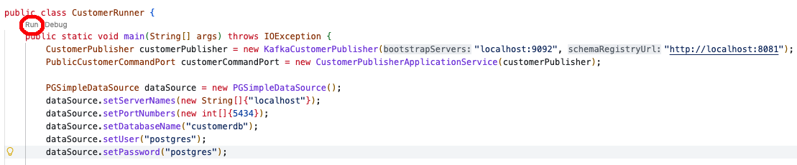
-
You might see the following pop up on the bottom right-hand side, feel free to click on Open in Browser. If you didn’t, that’s fine you can always go to the port’s tab like you did before and open port
9000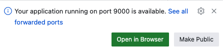
-
You should see the following webpage or something similar to this.
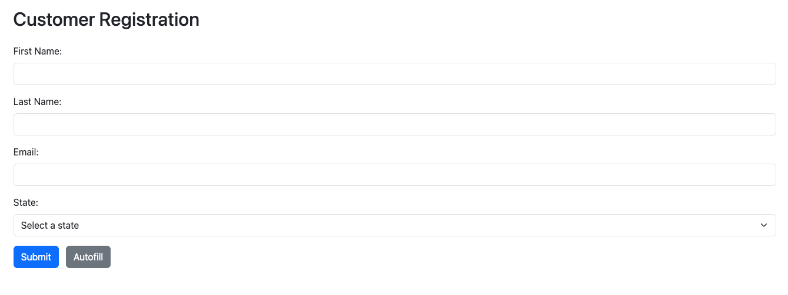
-
Click on the Autofill button, adjust the fields to your liking, and then press Submit. Do a few more.
-
Next, let’s open the Confluent Control Center, and view our topic by going to the Ports tab, which you know where that is now, and open up port number
9021. This will open the following page: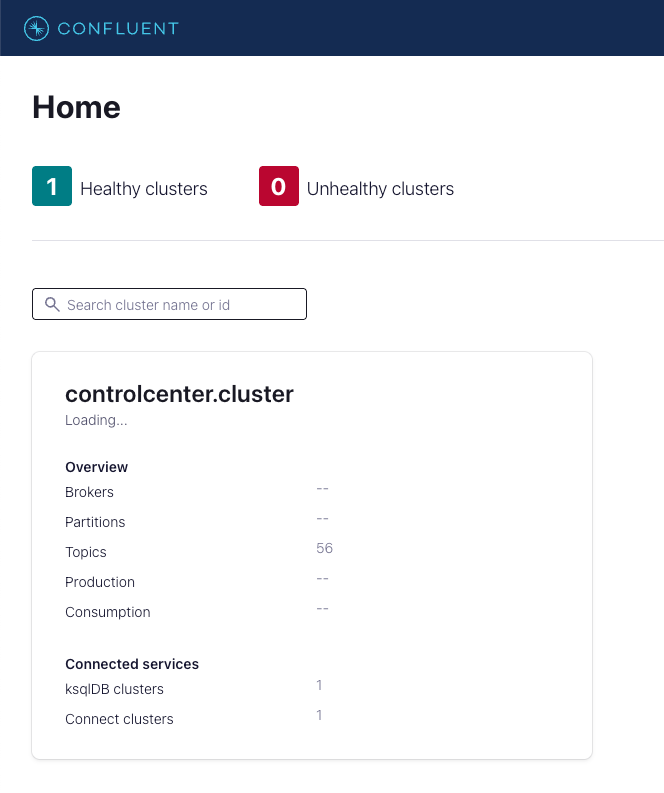
-
Click on the box, controlcenter.cluster, this should take you to the cluster overview page. On the left menu, choose Topics. From here you should see the customers topic. Click on the topic.
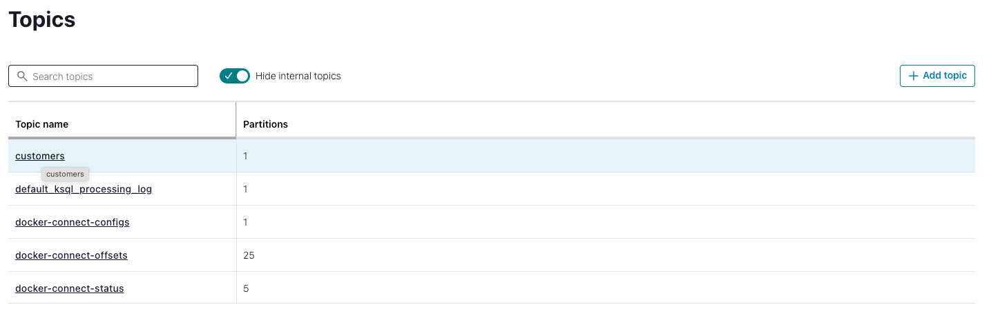
-
Click on Messages, and in the field called offset put the number
0and hit ENTER. -
Navigate and view your messages
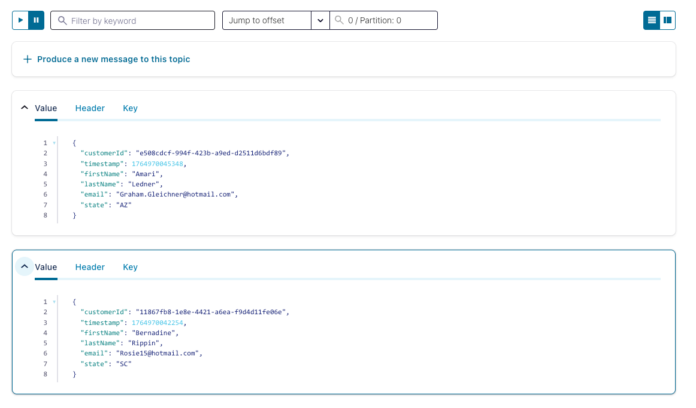
-
Now let’s do the same for
inventory, open theinventorymodule and then open in your editor the file src/main/java/com/evolutionnext/customer/InventoryRunner.java and run the application. This will run on port9001. Open that port and create some products, feel free to use the Autofill button.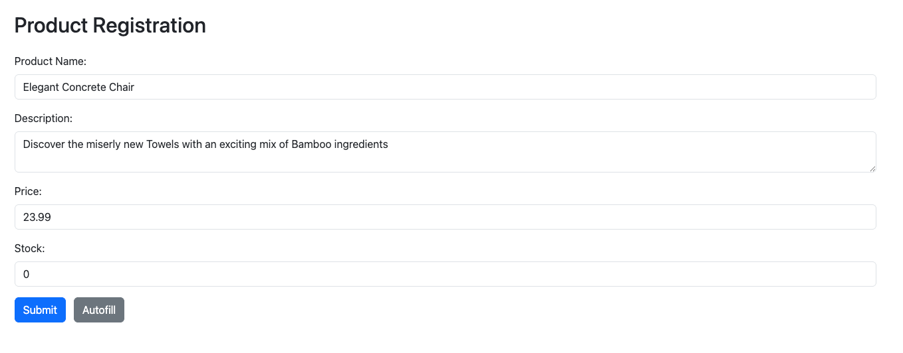
-
After creating some customers and products, let’s create some orders! Open the
ordermodule and then open in your editor the file src/main/java/com/evolutionnext/customer/OrderRunner.java and run the application. This will run on port9003 -
When attempting to create orders, notice that the drop-down doesn’t have a customer, and notice as well that if you attempt to create a line item, there are no products. Simple solution, we need to run the consumers. Let’s do both.
-
Open the
order-customer-consumermodule and then open in your editor the file src/main/java/com/evolutionnext/order/customer/OrderCustomerConsumerRunner.java and run the application. This will ingest messages from the topic customers and replenish our local data stores. -
Open the
order-product-consumermodule and then open in your editor the file src/main/java/com/evolutionnext/order/product/OrderProductConsumerRunner.java and run the application. This will ingest messages from the topic inventory and replenish our local data stores.
-
-
Now you should be able to complete the order form and submit orders.
-
Let’s discuss what is going on in detail.
Lab: Outbox
-
Stop all the Java Applications from the previous lab
Restarting all the services
-
Open a new terminal in the development environment and ensure that you are in the project root. Take down all the containers, including their volumes. We need to start with a clean slate
docker-compose down -v -
Bring them back up with the following
docker-compose up -d
Installing the Connectors
-
Go the containers menu
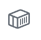
on the left-hand side of your editor. -
Right-click on the cp-kafka-connect container and select Attach Shell.
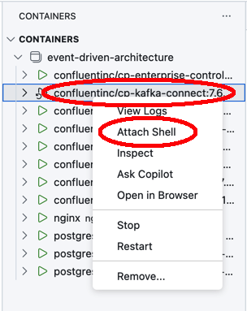
-
Paste the following into the terminal
confluent-hub install confluentinc/kafka-connect-jdbc:10.9.1 -
When prompted for where to install the selection, choose
2The component can be installed in any of the following Confluent Platform installations: 1. / (installed rpm/deb package) 2. / (where this tool is installed) Choose one of these to continue the installation (1-2): 2 -
When asked
Do you want to install this into /usr/share/confluent-hub-components? (yN), choosey -
Choose
yagain to choose the license agreement -
When asked
Do you want to update all detected configs? (yN), choosey -
Install the debezium driver by entering the following in the
connectcontainerconfluent-hub install debezium/debezium-connector-postgresql:2.5.4 -
When asked
Do you want to install this into /usr/share/confluent-hub-components? (yN), choosey -
Choose
yagain to choose the license agreement -
When asked
Do you want to update all detected configs? (yN), choosey -
Restart the container, by ensuring you are still in the containers menu on the left-hand side of your editor.
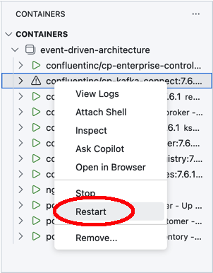
Submitting the Connectors
-
We will establish three outboxes for each bounded context service:
order,inventory, andcustomer -
In each of the modules:
order,inventory, andcustomer, there is a JSON file with the connector located the src/main/resources in each of the modules. Here is an example of the inventory connector.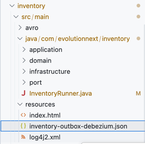
-
Right-click on the file and save it to your local machine
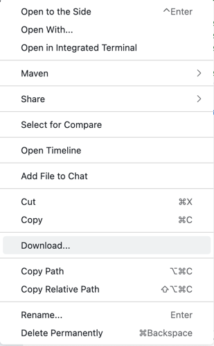
-
Continue to do the same and download the connector files for
order, andcustomer. You should have three files downloaded.
Creating the Outbox Source Connections
-
In your Confluent Control Center menu, look for Connect on the left menu and select it. This should show the view of the Connect Clusters available.
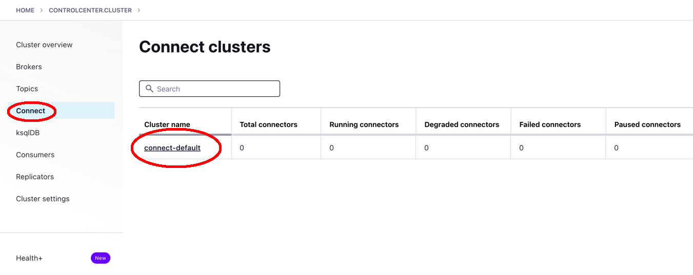
-
Click on connect-default
-
Click on the Add Connector button
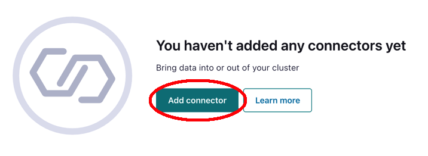
-
On the following page, you will see we have other connectors as buttons that we can manually enter in our connectors, but we already have three files with everything already declared and configured.
-
Click on the Upload connector config file button
-
Select the inventory-outbox-debezium.json file you downloaded earlier.
-
Select Next
-
Select Launch
-
You will see that it will state that it has failed initially but will soon start to work
-
Do the same for order-outbox-debezium.json and customer-outbox-debezium.json
Viewing the Database
-
Go back to your Codespaces environment
-
Click on the on the left menu
-
Click on the "Add Connection" button
-
Once there, you can click on the Postgres icon to establish a connection
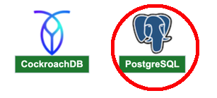
-
Add the connection for
inventory-
Connection Name: inventorydb
-
Server Address: localhost
-
Port: 5433
-
Database: inventorydb
-
Username: postgres
-
Use Password: Save as plaintext in settings
-
Password: postgres
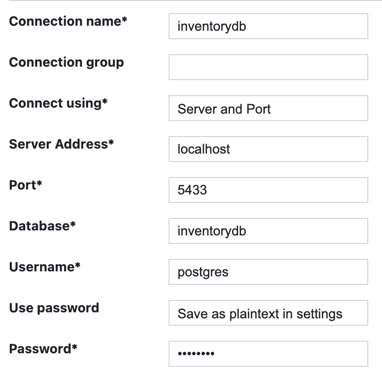
-
-
Test the connection and save the connection
-
When prompted Connect Now
-
SQL Tools allows us to issue commands and view data as it comes into the database
-
Click on the Add Connection button, which is now situated at the top of the SQLTools window.
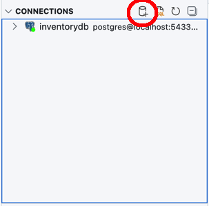
-
Follow the same process and add the connection for the customerdb
-
Connection Name: customerdb
-
Server Address: localhost
-
Port: 5434
-
Database: customerdb
-
Username: postgres
-
Use Password: Save as plaintext in settings
-
Password: postgres
-
-
Follow the same process and add the connection for the customerdb
-
Connection Name: orderdb
-
Server Address: localhost
-
Port: 5432
-
Database: orderdb
-
Username: postgres
-
Use Password: Save as plaintext in settings
-
Password: postgres
-
Switching the Inventory Service into an Outbox
-
In the
inventorymodule, open src/main/java/com/evolutionnext/inventory/InventoryRunner.java. -
Look for the line (around line 23) that says the following
SimpleWebServer simpleWebServer = new SimpleWebServer(createPublisherService()); -
Change it so that we are using the outbox service
SimpleWebServer simpleWebServer = new SimpleWebServer(createOutboxService()); -
Fix any compilation issues.
-
Run a new
InventoryRunnerwith the Outbox in place.
Switching the Customer Service into an Outbox
-
In the
customermodule, open src/main/java/com/evolutionnext/inventory/CustomerRunner.java. -
Look for the line (around line 19) that says the following
SimpleWebServer simpleWebServer = new SimpleWebServer(createPublisherService()); -
Change it so that we are using the outbox service
SimpleWebServer simpleWebServer = new SimpleWebServer(createOutboxService()); -
Fix any compilation issues.
-
Run a new
CustomerRunnerwith the Outbox in place.
Switching the Order Service into an Outbox
-
In the
ordermodule, open src/main/java/com/evolutionnext/order/OrderRunner.java. -
Look for the line (around line 47) that says the following
SimpleWebServer simpleWebServer = new SimpleWebServer( new IndexHandler(createPublisherService()), new ProductHandler(orderQueryApplicationService), new CustomerHandler(orderQueryApplicationService)); -
Change it so that we are using the outbox service
SimpleWebServer simpleWebServer = new SimpleWebServer( new IndexHandler(createOutboxService(dataSource)), new ProductHandler(orderQueryApplicationService), new CustomerHandler(orderQueryApplicationService)); -
Fix any compilation issues.
-
Run a new
OrderRunnerwith the Outbox in place. -
Re-run OrderCustomerConsumerRunner.java from the
order-customer-consumermodule -
Re-run OrderProductConsumerRunner.java from the
order-product-consumermodule -
Create some products, create some customers, and now try to create an order, and we should be successful.
-
Feel free to use SQLTools to query the tables by clicking on the icon on the left.
-
Select the table you wish to query, and right-click, selecting the Show Table Records

-
Create more inventory, customers, and orders so we can have a variety
-
Let’s discuss how it all works.
Lab: State Report
Crafting the Data
-
Go to the containers menu item
-
Open the ksqldb-cli container, by going into containers, right-clicking on the container and select open terminal
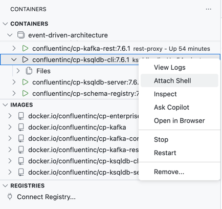
-
In the terminal, run the cli
$ ksql http://ksqldb-server:8088 -
You are now in the KSQL shell. Let’s set
auto.offset.resettoearliestso we can see the data from the beginning.set 'auto.offset.reset' = 'earliest'; -
Let’s tap into the orders to topic
CREATE STREAM ORDER_EVENTS_STREAM WITH ( KAFKA_TOPIC='orders', VALUE_FORMAT='AVRO' ); -
Run the query so we can see the data.
select * from order_events_stream emit changes; -
Add some new orders from your
ordersweb page, and come back and view the orders come in. When you are done with viewing the query terminate the query with kbd:CTRL+C -
We need to refine this query, so we can fit it into a table in the
customerservice. Our goal is to shape it to this table:create table public.orderhistory ( orderid uuid not null primary key, customerid uuid not null references public.customer, total numeric(19, 4) not null, timestamp timestamp not null );We do so by running the following queries, see how we can build up to what we need. All these are live feed, you can stop listening by hitting CTRL+C
select orderId, timestamp, event from order_events_stream where eventtype = 'ORDER_PLACED' emit changes;select orderId, timestamp, event->ORDERPLACEDMESSAGE->ORDER->CUSTOMERID from order_events_stream where eventtype = 'ORDER_PLACED' emit changes;select orderId, timestamp, event->ORDERPLACEDMESSAGE->ORDER->CUSTOMERID, event->ORDERPLACEDMESSAGE->ORDER->ORDERITEMS as item from order_events_stream where eventtype = 'ORDER_PLACED' emit changes;select orderId, timestamp, event->ORDERPLACEDMESSAGE->ORDER->CUSTOMERID, EXPLODE(event->ORDERPLACEDMESSAGE->ORDER->ORDERITEMS) as item from order_events_stream where eventtype = 'ORDER_PLACED' emit changes; -
Now that we see the query that will work, let’s post the results onto a Kafka Topic. This is called a persistent-query since the results will go into a topic.
CREATE STREAM ORDER_ITEMS_FLATTENED AS SELECT orderId, timestamp, event->ORDERPLACEDMESSAGE->ORDER->CUSTOMERID AS customerId, EXPLODE(event->ORDERPLACEDMESSAGE->ORDER->ORDERITEMS) AS item FROM ORDER_EVENTS_STREAM WHERE eventType = 'ORDER_PLACED'; -
Verify that the topic
ORDER_ITEMS_FLATTENEDis created in the Confluent Control Center. -
We still need some more processing to do, this was just a staging topic as a means to an end. Run the following query and see if it matches the DDL you saw earlier on this page.
SELECT orderId, LATEST_BY_OFFSET(customerId) AS customerId, LATEST_BY_OFFSET(timestamp) AS timestamp, SUM(item->QUANTITY * item->PRICE) AS total FROM ORDER_ITEMS_FLATTENED GROUP BY orderId emit changes; -
Let’s take the results and put them in a topic. We will create a table instead of a stream because this is aggregate, and we just used
group byin the above query.CREATE TABLE ORDER_HISTORY AS SELECT orderId, LATEST_BY_OFFSET(customerId) AS customerId, LATEST_BY_OFFSET(timestamp) AS timestamp, SUM(item->QUANTITY * item->PRICE) AS total FROM ORDER_ITEMS_FLATTENED GROUP BY orderId; -
Verify the results of the topic in the Confluent Control Center under the topic
ORDER_HISTORY
Depositing the Data
-
In the modules
customer, there is a JSON file with the connector located in the src/main/resources folder called order_customer-jdbc.json -
Now, let’s fit this into our table using a sink. Go to Confluent Control Center upload the connector order_customer-jdbc.json which will take from the topic ORDER_HISTORY and insert the results into order_history in the
ordersdatabase. -
View the results in the
orderhistorytable in thecustomerdatabase. You can also view thestatereporttable which is a materialized view based off of the orders. This is enrichment of our data, and if this data was on a separate database, we would have a CQRS implementation.